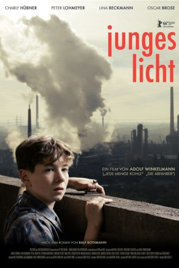
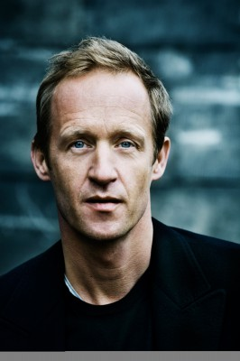

#4823 Junges Licht
 
 IMDB-Wertung: 6.6 / 10
IMDB-Wertung: 6.6 / 10  Metascore: 0
Metascore: 0 
Ein Sommer im Ruhrgebiet der 60er Jahre: Der Fortschritt der Republik wird hier produziert, mit Kohle und Stahl als Bausteine des Wirtschaftswunders. Man raucht, isst Currywurst, kauft im Tante-Emma-Laden und sieht auf dem Weg zur Arbeit viele Gastarbeiter. Der zwölfjährige Julian will in dieser Welt nicht wie seine Altersgenossen Bier trinken und obszöne Sachen machen, er ist anders. Er kümmert sich um seine kleine Schwester, schmiert die Brote für den unter Tage schuftenden Vater Walter und hilft sonntags in der Kirche. Julian ist ein aufmerksamer Beobachter, weswegen ihm auch die frühreife Nachbarstochter Marusha nicht entgehen kann. Von ihr ist er fasziniert – aber natürlich nicht der einzige Verehrer. An einem besonders heißen Tag entlädt sich die erotische Spannung und das Leben von Julian und seiner Familie ist danach nicht mehr dasselbe. Der Junge läuft von zuhause weg, um sich einem Pfarrer anzuvertrauen…
Jahr: 2016
Dauer: 122 Minuten
FSK:
Land: Deutschland Studio: Weltkino FilmverleihTonspuren:
Untertitel:
Auflösung: 1080p (1920x1040) Größe: 5058 MB
Genre: Drama
Regisseur: Adolf Winkelmann
Drehbuch: Eddie Borey
Soundtrack:
Darsteller:
 Peter Lohmeyer als Konrad Gorny
Peter Lohmeyer als Konrad Gorny-  Stephan Kampwirth als Herbert Lippek
 Ludger Pistor als Pfarrer Stürwald
Ludger Pistor als Pfarrer Stürwald- Charly Hübner als Walter Collien
- Oscar Brose als Julian Collien
- Lina Beckmann als Liesel Collien
- Magdalena Matz als Sophie Collien
 Nina Petri als Trudchen Gorny
Nina Petri als Trudchen Gorny- Greta Sophie Schmidt als Marusha
- Caroline Peters als Frau Morian
- Patrick Joswig als Onkel Jupp
- Andreas Beck als Lehrer Staitzner
- Linus Schütz als Jonny
- Henk Buchholz als Karl Maronde
- Bennet Pappe als Franz Maronde
- Andreas Rother als Der Dicke
- Franziska Mense-Moritz als Frau Kalde
- Till Beckmann als Kumpel
Datei: X:\2016(G-M)\Junges Licht (2016, FSK, 1920x1040).mkv seit 21.11.2016
Festplatte: HD 2016(A-Z)
 Es gibt insgesamt 164 Filme in der Gruppe '2016(G-M)'
Es gibt insgesamt 164 Filme in der Gruppe '2016(G-M)'